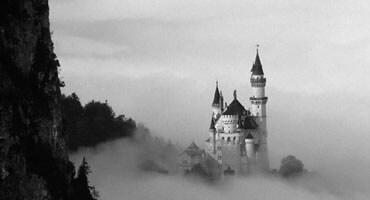

Blog
Gün İçerisinde Flaşla Fotoğraf Çekmenin 4 Yöntemi
Birçok fotoğrafçı için flaşlar vazgeçilmez aksesuarlardır; az ışıklı ortamlarda elde rahatça net çekim yapabilmeyi sağlayacak enstantane değeri için bize ek ışık sağlar, gün ışığında daha dengeli pozlamalar elde etmemize yardımcı olur, hızlı hareket eden öznelerin donmasını sağlar ve aynı zamanda diğer flaş ışık kaynaklarını kontrol etmek veya tetiklemek için kullanılabilir.
Flaşlar, görüntülerimizi çarpıcı hale getiren estetik kareler oluşturmak için oldukça etkili ve yaratıcı araçlardır. Bir harici kamera flaşının faydaları dahili bir kamera flaşına nazaran çok daha ağır basarken, tek dezavantajı ilave bir ekipman parçası olmasıdır. Bu yazımda, flaş çekim teknikleri, flaş modları ve kullanım yöntemlerine göz atacağız.
“Harici flaş” terimi, kameranızdan ayrı farklı bir ekipman olan, aynı zamanda direk olarak kameranızın flaş yuvasına da bağlanabilen harici bir flaş ünitesini ifade eder, ancak flaş olarak kullanılabilmesi için kameranıza mutlaka fiziksel olarak takılmasını gerektirmez. Harici flaşlar kameradan ayrı olarak da kullanılabilir. Harici flaşlar aynı zamanda genellikle kendi içlerindeki, kendi kendilerini besleyen bir güç kaynağına sahiptir, bazen performanslarını veya pil ömrünü iyileştirmek için bu flaşlara harici güç kaynakları da takılabilir.

Işığın kamera üzerine takılı bir flaştan sahneye dik olarak yansıtılması çoğu zaman istenmez; flaş ışığını diğer yüzeylerden yansıtmak için flaşınızın yönünü kontrol etmek istersiniz.
Oysa, kamera gövdesi üzerinde bütünleşik gelen dahili flaşı belli ve yönü değiştirilemeyen sabit bir açıda kullanmak zorunda kalırsınız.
Harici flaşlar, neredeyse her bakımdan dahili flaştan daha iyi performans gösterirler. Flaşı fotoğraf makinenizden ayrı kullanabilme özelliği size çok daha fazla sayıda aydınlatma seçeneği sunar; flaşlarınızı dilediğiniz yere konumlandırabildiğinizden, sahnenizde yeterli bir pozlamayı yakalamak için kameranın üzerine takılı bir flaştan yayılan düz bir ışık patlamasından çok daha fazlasını sağlar.